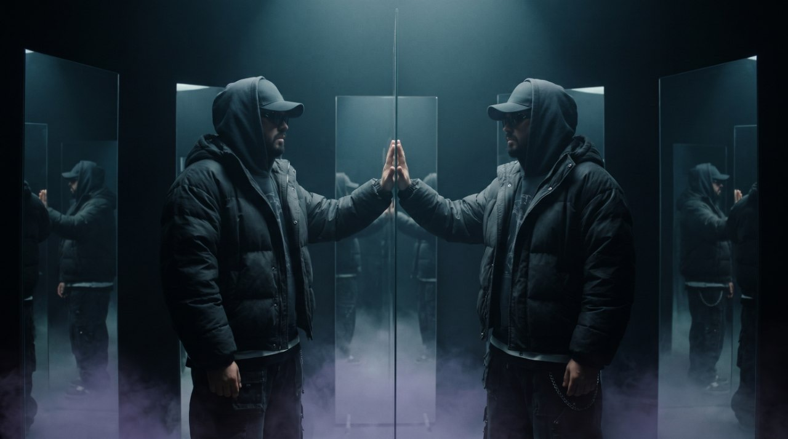

FEATURED RELEASE / JOSEPH
DARK
Listen to DARK on your favorite platform or watch the official music video.
Listen to DARK on your favorite platform or watch the official music video.


Joseph Nasrifar, professionally known as JOSEPH, is an American–Persian rapper, singer, and songwriter. Raised in Los Angeles with strong ties to Iran, he began writing, recording, and officially releasing music in 2011.
Blending melodic hip-hop, atmospheric trap, and English–Persian lyricism, his work explores ambition, relationships, nightlife, heartbreak, and personal transformation. His catalog includes collaborations with Ary Karami, Sami Low, and Mr. MP.
PRESS / BOOKING ↗Approx. 285,277 reported plays and views across 8 platforms. Updated November 25, 2026.
 Counter unavailable
Counter unavailableRecorded since counter activation; repeat visits may count.
Music and social platforms.
Instagram, Telegram and TikTok post views.
Artist-reported snapshot; includes audio plays, video and social post views, not unique listeners. Rounded platform figures and possible overlap may affect totals. Music and social figures are updated manually.




FEATURED MUSIC VIDEO / DARK
For professional inquiries
joenasrifar@gmail.com ↗